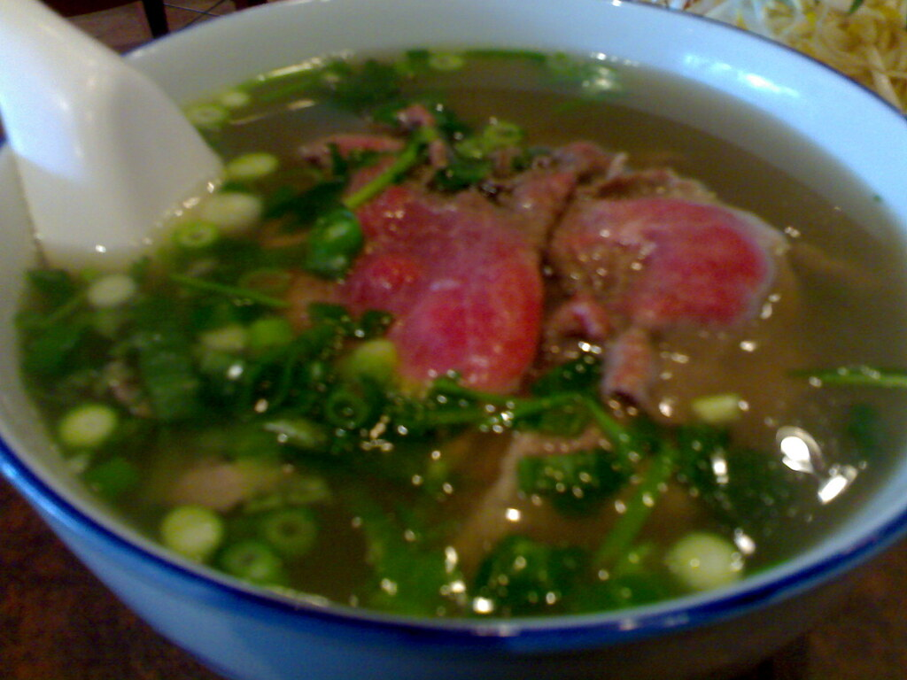

Gastronomía
Guía gastronómica de Vietnam: qué comer según el Norte, Centro y Sur

Si hay un país en el mundo donde viajar se convierte en un menú de degustación andante, ese es Vietnam. Aquí la comida no es solo sustento: es cultura, es historia en cada bocado y es, sin duda, la razón principal por la que miles de viajeros se enamoran de este rincón del Sudeste Asiático.
Hay un error muy común entre los viajeros: pensar que la comida vietnamita es igual en todo el país. ¡Para nada! Cruza una frontera regional y verás cómo cambian los ingredientes, las texturas y los sabores. Prepárate para este viaje culinario a través de las tres grandes regiones de Vietnam: el Norte tradicional, el Centro imperial y el Sur tropical.
El Norte: el reino del equilibrio y la tradición
El norte de Vietnam (con Hanói a la cabeza) es la cuna de la cocina del país. Al tener un clima con estaciones más marcadas y un invierno fresco, sus platos tienden a ser reconfortantes. Aquí no encontrarás sabores extremadamente picantes ni dulces; los norteños prefieren la sutileza, el equilibrio perfecto y el uso generoso de la pimienta negra en lugar del chile.
Los platos imperdibles del Norte
- El Phở auténtico (Phở Bắc): la famosa sopa de fideos nació aquí. A diferencia del sur, el phở del norte es más simple y minimalista: caldo de ternera claro, puro y aromático, casi sin hierbas añadidas ni salsas dulces. Solo fideos, carne tierna, cebollino y un toque de lima.
- Bún Chả: el plato favorito de los locales para almorzar (el que comió Anthony Bourdain con Barack Obama en Hanói). Fideos de arroz finos que mojas en un caldo templado de salsa de pescado con papaya encurtida, con albóndigas de cerdo a la parrilla de carbón y una montaña de hierbas frescas.
- Bánh Cuốn: rollitos de masa de arroz al vapor, increíblemente finos, rellenos de cerdo picado y setas, coronados con chalotas crujientes.
El imperdible líquido: no te vayas de Hanói sin probar el Cà phê trứng (café de huevo). Es la versión vietnamita del tiramisú: un café robusto y amargo cubierto con una crema densa y dulce de yema batida con leche condensada. Una delicia total.
El Centro: especias, realeza y fuego
El centro de Vietnam, dominado por la histórica ciudad imperial de Hue y la encantadora Hoi An, ofrece una gastronomía completamente diferente. Los chefs de la corte imperial tenían que impresionar al emperador con platos sofisticados, coloridos y llenos de sabor. Además, a los locales les fascina el picante: aquí el chile es el rey.
Los platos imperdibles del Centro
- Bún Bò Huế: la hermana rebelde y picante del phở. Una sopa de fideos de arroz más gruesos con caldo robusto de huesos de ternera, limoncillo y bastante chile. Se acompaña de res, cerdo y, a veces, cubos de sangre coagulada (para los más atrevidos).
- Cao Lầu (exclusivo de Hoi An): no se puede replicar en ningún otro lugar porque, según la tradición, los fideos deben cocinarse con el agua de un pozo antiguo secreto (el pozo Bá Lễ). Lleva fideos gruesos, cerdo marinado al estilo char siu, brotes de soja y texturas crujientes.
- Bánh Bèo: pequeños discos de pastel de arroz al vapor servidos en platitos individuales, cubiertos con camarones secos, corteza de cerdo crujiente y aceite de cebollino. Se comen con cuchara y un toque de salsa de pescado.
El Sur: dulzor tropical y abundancia de hierbas
Al llegar al sur (con el bullicio de Ho Chi Minh / Saigón), el paisaje cambia y la comida también. El clima cálido todo el año y la fertilidad del delta del Mekong hacen que el sur sea rico en frutas, verduras, coco y azúcar de palma. Por eso la comida sureña es notablemente más dulce, vibrante y usa leche de coco en muchísimas preparaciones.
Los platos imperdibles del Sur
- Bánh Xèo: un crepe gigante y ultra crujiente. La masa lleva harina de arroz, cúrcuma (de ahí su color amarillo) y leche de coco, y se rellena de cerdo, gambas y brotes de soja. Cortas un trozo, lo envuelves en lechuga con hierbas y lo mojas en salsa agridulce.
- Hủ Tiếu: la sopa favorita del sur. El caldo suele ser de cerdo y los fideos pueden tener distintas texturas. Se acompaña con mariscos, codorniz, cerdo y una cantidad exagerada de hierbas frescas que tú mismo añades.
- Cơm Tấm (arroz roto): un plato humilde convertido en el rey de las calles de Saigón. Granos de arroz rotos servidos con chuleta de cerdo a la parrilla, pastel de huevo al vapor y encurtidos.
Consejos para comer street food como un pro (sin riesgos)
El street food es donde ocurre la verdadera magia, pero para disfrutarlo sin terminar en el hospital sigue estas tres reglas de oro:
- La regla de la multitud: ve siempre a los puestos donde veas a familias locales comiendo. Mucha gente significa comida deliciosa y rotación altísima de ingredientes (nada lleva horas al sol).
- El agua y el hielo: en ciudades grandes como Hanói o Ho Chi Minh el hielo de los puestos establecidos es seguro (viene en cubos cilíndricos de fábrica). En zonas muy rurales, mejor pedir bebidas embotelladas.
- Observa el caldo: las sopas como el phở hierven a temperaturas tan altas que matan cualquier bacteria. Comer sopa en un puesto callejero suele ser de lo más seguro.
¿Cuál es la mejor región?
No hay una respuesta correcta. Si buscas sabores reconfortantes y sutiles, el Norte te ganará el corazón. Si amas el picante y los platos con historia, el Centro es tu lugar. Y si te gustan los matices dulces, frescos y tropicales, el Sur te fascinará. Lo mejor es cruzar el país de punta a punta y juzgar por ti mismo. ¡Buen provecho o, como dicen los locales, Chúc ngon miệng!
¿Quieres comer todo esto con un guía local que habla tu idioma?
Ver el viaje a Vietnam & Camboya